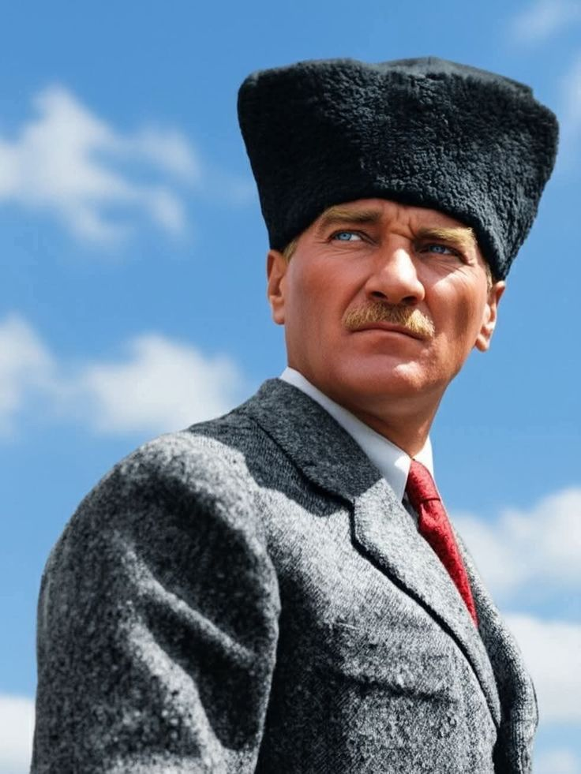
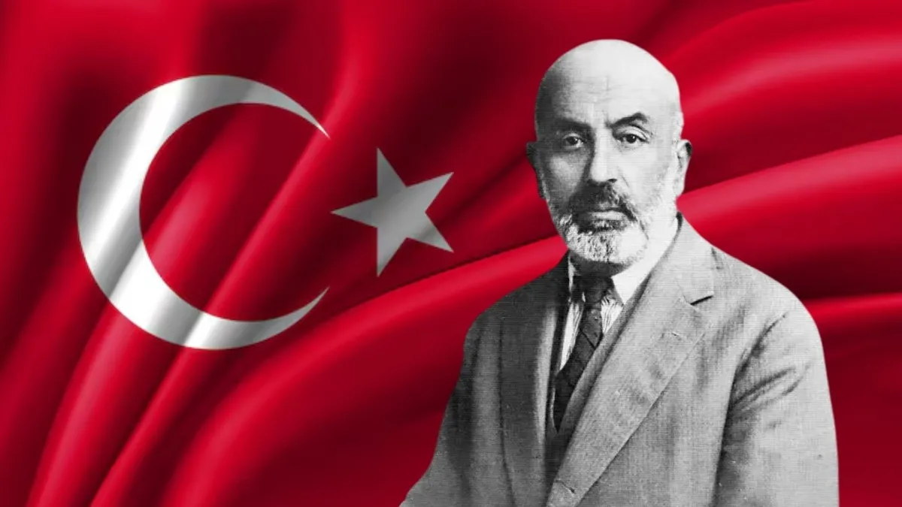
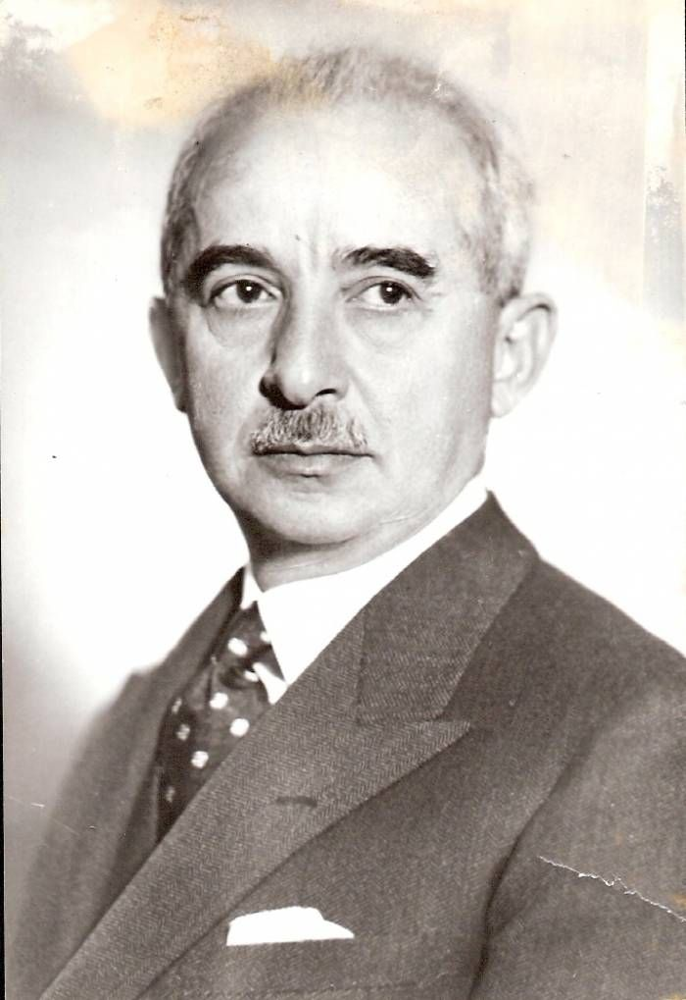
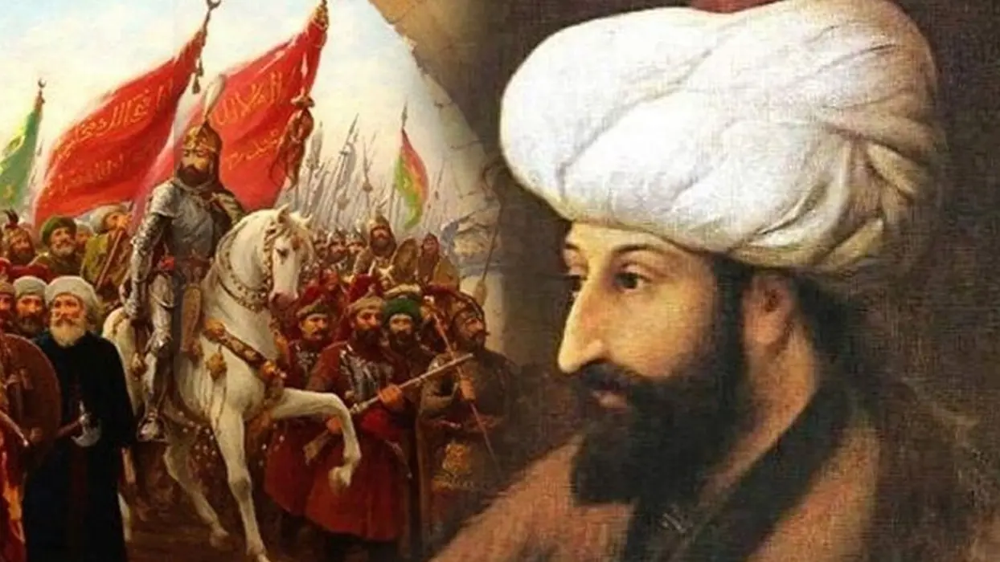
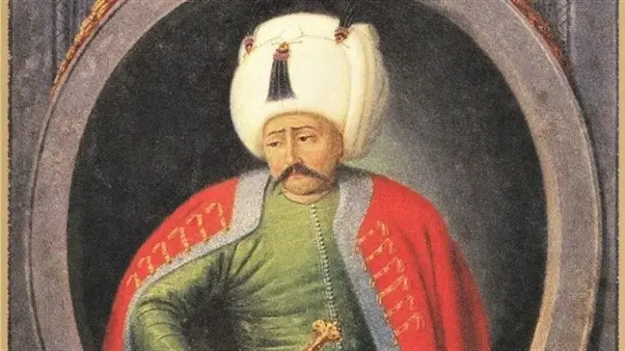

Türk tarihinin önemli dönemlerini, mücadelelerini, kültürel mirasını ve tarihî gelişimini etkileşimli bölümlerle keşfet.
Bir tarih noktasına tıklayarak o dönemin bilgisini aç.
Aşağıdaki yıllardan birine tıklayarak başlayabilirsin.
Haritadaki kırmızı noktalara veya şehir düğmelerine tıkla.
10 soruyu cevapla ve puanını yükselt.
Bir sergiye tıklayarak ayrıntılı bilgi aç.
Dijital müze salonlarına hoş geldin.
Mustafa Kemal Atatürk hakkında bilgi.
İstiklâl Marşı'nın tarihi.
1453 yılı ve fetih.
Osmanlı padişahı hakkında bilgi.
TBMM'nin açılışı.
Millî Mücadele dönemi.
Siteyi kullanırken farklı rozetlerin kilidini aç.

Mustafa Kemal Atatürk, Türkiye Cumhuriyeti'nin kurucusu ve ilk Cumhurbaşkanıdır. Kurtuluş Savaşı'nın önderliğini yapmış ve Cumhuriyet'in kurulmasına öncülük etmiştir.

Mehmet Âkif Ersoy tarafından yazılan İstiklâl Marşı, Türkiye Cumhuriyeti'nin millî marşıdır.

İsmet İnönü, Kurtuluş Savaşı döneminde önemli görevler üstlenmiş ve Türkiye Cumhuriyeti'nin ikinci Cumhurbaşkanı olarak görev yapmıştır.
Mustafa Kemal Paşa'nın Samsun'a çıkışı, Millî Mücadele'nin başlangıcında önemli bir dönüm noktası oldu.
Türkiye Büyük Millet Meclisi Ankara'da açıldı.
Sakarya Meydan Muharebesi kazanıldı.
Büyük Taarruz ve Başkomutanlık Meydan Muharebesi ile Millî Mücadele'nin askerî safhasında belirleyici başarı elde edildi.
Türkiye Cumhuriyeti ilan edildi.

Fatih Sultan Mehmet, 1453 yılında İstanbul'u fethederek Osmanlı tarihinin önemli hükümdarlarından biri olmuştur.

Yavuz Sultan Selim, Osmanlı Devleti'nin dokuzuncu padişahıdır. Kısa süren saltanatı döneminde devletin topraklarını önemli ölçüde genişletmiştir.
Osmanlı dönemini ve Türk askerî tarihini konu alan eserlerden biri olan Ceddin Deden'i buradan dinleyebilirsin.
Osmanlı Beyliği'nin ortaya çıkışı.
Fatih Sultan Mehmet İstanbul'u fethetti.
Yavuz Sultan Selim döneminde Osmanlı'nın Mısır ve çevresindeki hâkimiyeti genişledi.
Osmanlı saltanatı kaldırıldı.
Mustafa Kemal Atatürk ve Türk tarihi hakkında hazırlanmış 3D FPS tarzı bilgi oyunu. Soruları cevaplamak için A veya B kapılarından doğru olanı seç.
W A S D
→ Hareket
Mouse
→ Etrafa bak
ESC
→ Oyundan çık
⚠️ Oyun bilgisayarda çalıştırılır.
PC için hazırlanmış müze temalı oyun. Oyunu bilgisayarına indirerek çalıştırabilirsin.
⚠️ Oyun bilgisayarda çalıştırılır.